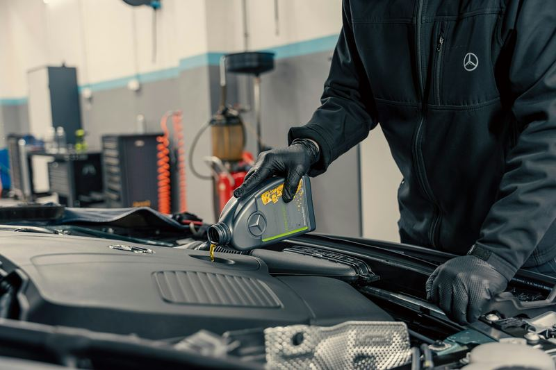
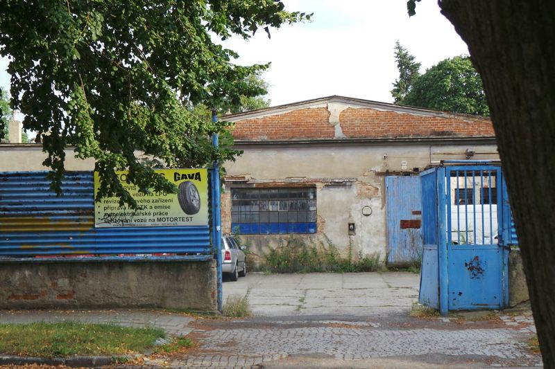
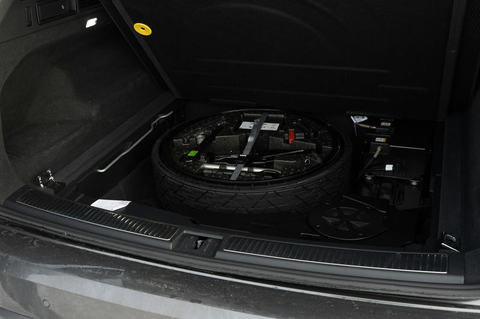
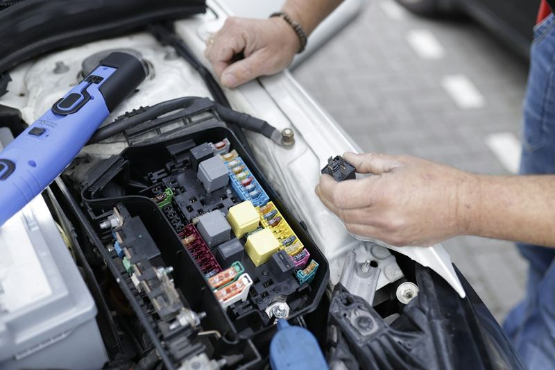

Opravy a servis
Pravidelný servis i opravy osobních aut.
Autoservis GAVA na Mikulášské 53. Opravy osobních aut, přestavby na LPG, příprava na STK, pneuservis, diagnostika podvozku a autoelektrika. Po–pá 7–17.
Po–pá 7–17

Zadejte, kolik najezdíte a kolik auto žere. Ceny paliv si upravte podle pumpy, kde tankujete.
Ročně ušetříte asi
0 Kč
Počítáme s tím, že na LPG auto spotřebuje asi o pětinu víc litrů než na benzín.
Chci nabídku na přestavbuNáhradní díly zajistíme.

Pravidelný servis i opravy osobních aut.

Prohlédneme auto a opravíme, co by na STK neprošlo.

Přezutí, vyvážení a diagnostika podvozku.

Elektrika, světla, startování a dobíjení.
5,0 z 5
hodnocení zákazníků na Firmy.cz